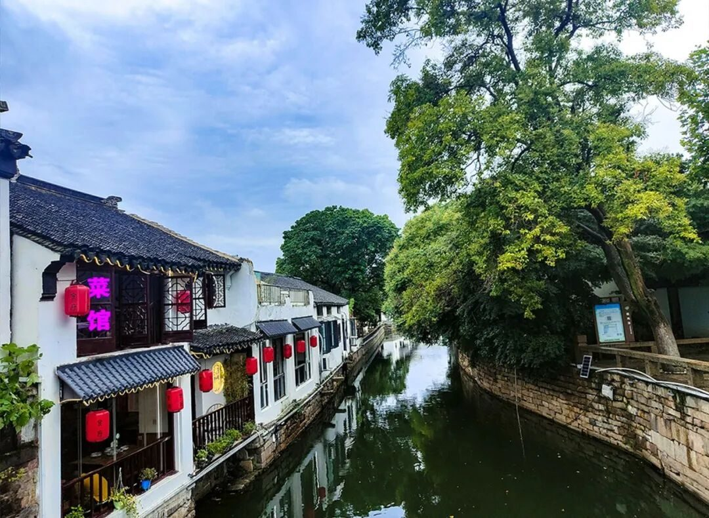
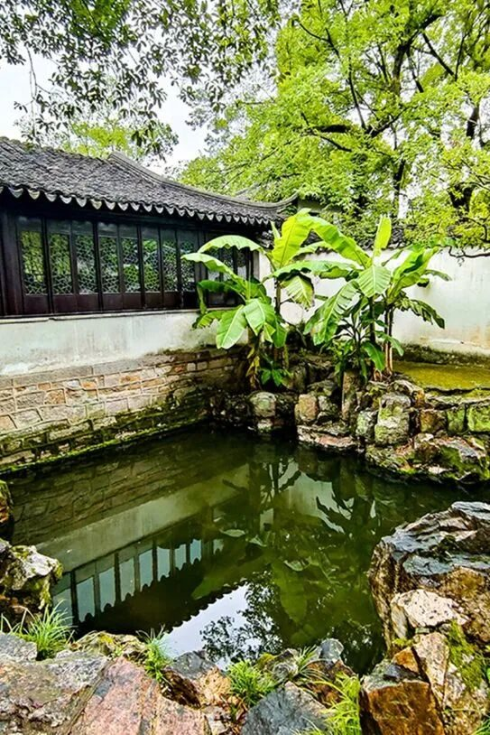
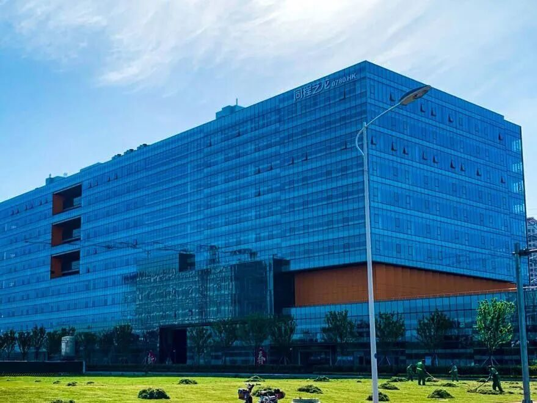

【写意江南】闤里姑苏 群贤毕集

姑
苏
0流眄苏杭
行者无疆
苏州，旧称姑苏，随处可见的水道街巷，以及令人惊叹的互联网高新企业，在我们调研苏州的几日里，给我们留下了深刻的印象。
苏州的街巷，较好地保存了《平江图》中的古城风貌，平江路上的小店，想不进去吃点东西、坐坐都难，在平江河旁，你可以不争朝夕，不争名利，看时光静静地从指尖划过，如若闲来无事，真可以来此坐坐，安安静静地悠然一下午，看看书，喝几杯茶。这清秀的街巷水道，可以放进诗词书画，带着阑珊的美丽，在馥郁的季节里，优雅着恬静。
在苏州的街巷里水道旁，静静伫立着的，是苏州的园林。古典园林，作为苏州的城市名片，城市的文化精髓，其优雅，清秀的文化元素，作为古典审美的核心，在快节奏生活的今天，已成为人们心灵的栖息地和情感的精神家园。

吴衣带水，方寸之地，千古风流。苏州，一个由街巷构成的老城水乡，因为其难出其右的美丽景观，由古至今多少文人雅士为其倾倒，自古以来便是人才济济。
而如今，在中国现代化建设的道路上，作为高新技术产业领头羊的苏州，也因为其创新之城的名号，吸引了无数互联网行业的人才。
在对苏州几日的调研中，我们也走访了苏州的互联网企业。在苏州工业园区内，写字楼鳞次栉比，这里便是互联网企业的天堂，走进其中，科技感迎面而来。
巨大的幕布展示着企业雄厚的技术力量，显示出互联网企业高新的特点；而高大的玻璃幕墙则给整个大厅带来了充盈的采光，阳光照在忙碌的员工的脸上，让朝气蓬勃的年轻人显得格外地耀眼。

由这么一群充满着激情与能量的年轻人构成的互联网行业，怎能不充满着希望！在这么一座充满了互联网等高新技术产业的城市——苏州，也已然成为了一个群贤毕集之地。
闤里姑苏，群贤毕集。有着“上有天堂下有苏杭”之称的苏州，令人瞩目的不仅仅是其清秀的街巷水道，美丽的园林，更有其雄厚的高新技术力量。
在现代化建设飞速发展的中国，苏州作为高新互联网产业的领头羊之一，为中国创新的名片写上浓重的一笔，为中国经济的腾飞做出了不可磨灭的贡献。
来源 | 行者无疆实践团
图片 | 行者无疆实践团
文字 | 朱华玮
排版 | 崔雨琪
审核 | 朱华玮 崔雨琪